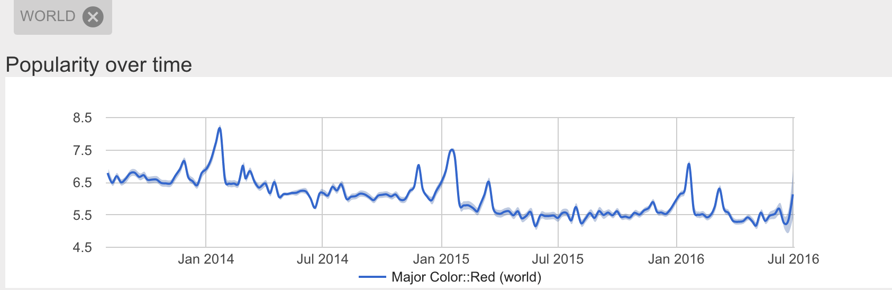
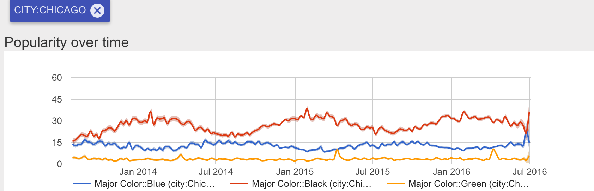
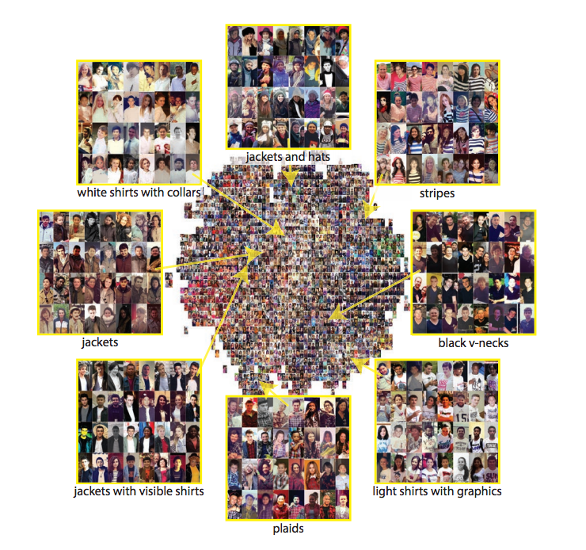

Atom to Atom - a science and tech blog
6/26/17 - AI algorithm analyzes millions of Instragram photos to measure global fashion trends
Researchers at Cornell University published a paper this month
detailing the methodology and results of a computer analysis of over 100 million photos uploaded to Instagram over a three-year period.
They were able to train algorithms to identify clothing styles in the photos and quantify how fashion trends vary throughout both space and time.
Computer scientists Kevin Matzen, Kavita Bala, and Noah Snavely , who utilized several machine learning techniques to create a first-of-its-kind analysis of global clothing styles, colors, and patterns, say their work represents a first step toward using machine learning and data mining techniques to gain insight into human culture. In particular, their aim is to tap the “tremendous cache of unstructured visual information… locked in images… including the billions of photos uploaded to photo-sharing services each day.”
The broader strokes of the study’s findings can be viewed online using this trend visualizer . Queries to this tool demonstrate that some clothing trends are tied firmly to geography: people wearing jackets appeared in 54% of photos taken in Iceland, but only 6% of those in Jamaica. Other trends have more to do with the time of year: the frequency of the color red in the United States spikes around Halloween and Christmas (particularly red hats), and a similar red spike in China accompanies the Chinese New Year.
The researchers selected clothing for their analysis because fashion offers an outward expression of multiple cultural factors: individuals may decide what to wear for reasons of geography, weather, religion, social status, gender expression, and beyond. These intersections of geography and culture played out in many different ways, showing that latitude was not necessarily destiny. For example, a country-by-country look at sleeveless shirts shows that people in Greece are twice as likely as those in neighboring (and more conservative) Turkey to go without sleeves.
The study’s analytics also examined “styles,” or combination of clothing attributes, and measured to what degree they were concentrated in space or time (such as yellow sports Jerseys in Bogota, Colombia during the world cup), as opposed to being universal (such as blue collared shirts and black t-shirts worn around the world and throughout the year).
An introductory selection of the algorithm’s findings is included in the following slides. You can use the online trend analyzer to find your own patterns in the data. Below, a more detailed discussion of the computational methodology is given.
Examples of results in trend visualizer
1 / 5

In the US, peak scarf popularity occurs on the same week at the end of January
2 / 5

Sleevless shirts are most popular in Central America
3 / 5

Despite its association with American hipsters, plaid is most commonly worn in Western Asia
4 / 5

Red has its seasonal spikes, but appears to be declining in global popularity
5 / 5

Red has its seasonal spikes, but appears to be declining in global popularity
❮
❯
Methodology
The two main types of machine learning are supervised and unsupervised learning; this study employs both techniques. Supervised learning requires having a set of “training data,” which is already sorted into the correct categories. The algorithm is exposed to this dataset so it can learn the distinguishing features of each category and then move on to unsorted data. During unsupervised learning, the algorithm is given an uncategorized dataset and is allowed to explore it and create its own categories and connections.
The training data for this study were obtained by pulling over 100 million photos from the Instagram API, which can query within five days of a specified date and within 5 kilometers of specified coordinates. From these, the facial recognition software Face++ was used to select the subset of photos that included a recognizable human face, around 37.7 million. Finally, a software tool called the “Deformable Part Model” allowed the researchers to select the subset of face photos in which a torso was also clearly visible (clothes on the lower body were not included, since the legs are often omitted from photos on social media). This left them with about 14.5 million photos. This is the dataset that would be explored during unsupervised learning, but the training dataset still needed to be generated.
To generate the training data, Amazon’s Mechanical Turk service was used to outsource the work of annotating clothing styles to human workers across the world, who were paid a few cents for every photo they analyzed. The end result was 27,000 annotated photos with distinct fashion characteristics. The researchers named this set STREETSTYLE-27K and have made it available online.
During the supervised learning phase, a convolutional neural network (CNN) was used to classify the 14 million images not included in STREETSTYLE-27K. The basic function of a CNN is to map a high-dimensional input, such as the pixels of an image, to a lower-dimensional output, such as a yes-or-no answer to whether the person in that image is wearing a jacket. The CNN used in the study was trained on image recognition from other studies before being set loose on STREETSTYLE-27K on the other photos.

Some examples of "style clusters" identified by the convolutional nueral network used in the Cornell study
Finally, once the CNN had learned how to classify images, it was allowed to freely explore the dataset and generate its own connections. These explorations resulted in a set of “entropy diagrams,” essentially identifying correlations between fashion categories that constituted composite “style clusters,” and finding how concentrated these styles were in time and place.
Biases and future work
The study acknowledged many of the limitations in their ability to create a representative dataset of fashion trends. First of all, the use of images from Instagram necessarily biased the data toward areas where mobile internet is available and where Instagram is both popularly used and not censored by the government. The facial recognition software used in the study has not been tested for its own inherent biases of race, gender, and age, as have been reported in other software.
Quantifying and eliminating these biases are key to the researchers’ further work, according to the study. Strategies toward that end include gathering images from other sources, learning more about the biases of the facial recognition software, and even trying to distinguish between native inhabitants of a place and tourists visiting that place, who might skew the results. The researchers believe their analysis can be integrated with other information such as weather and social media activity to discovery new cultural connections around the world.